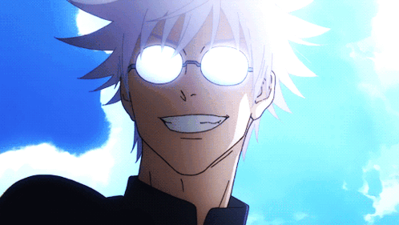
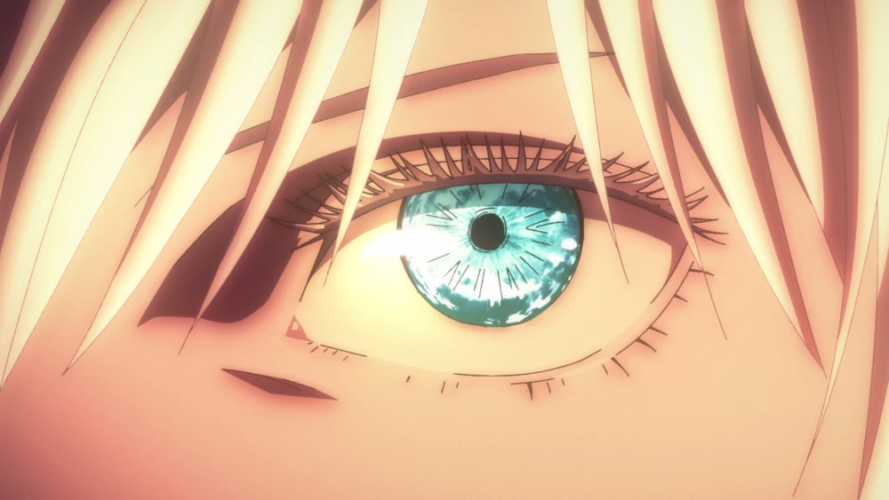
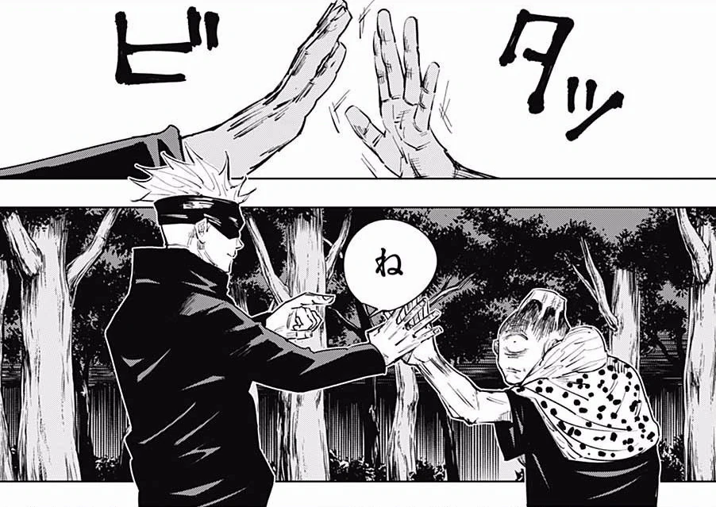
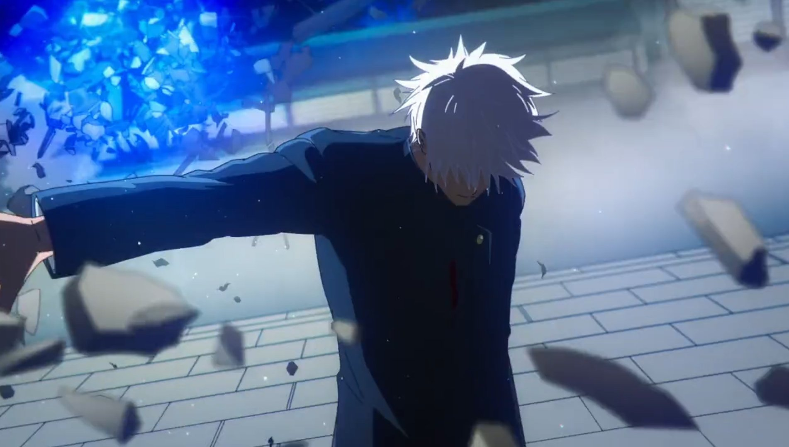
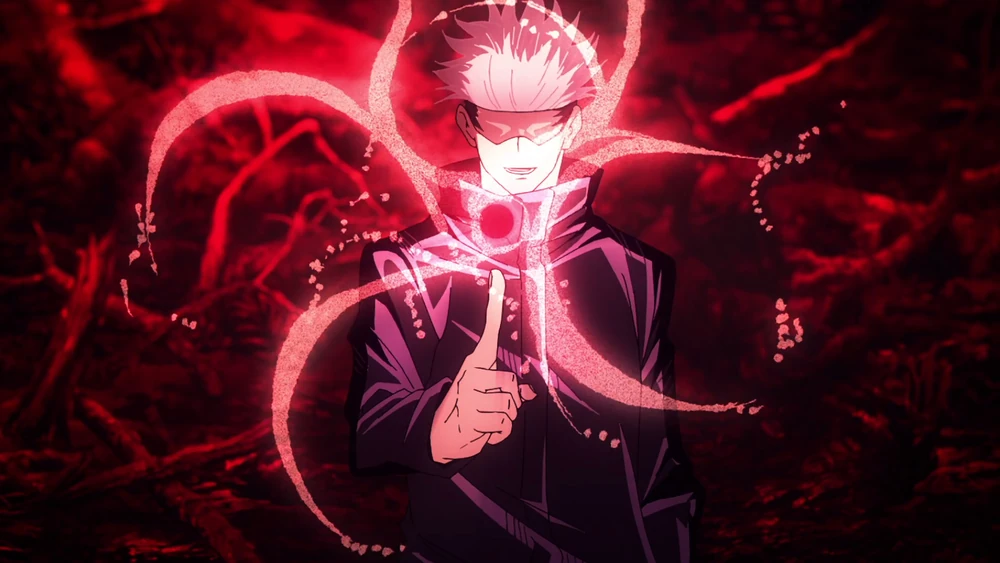
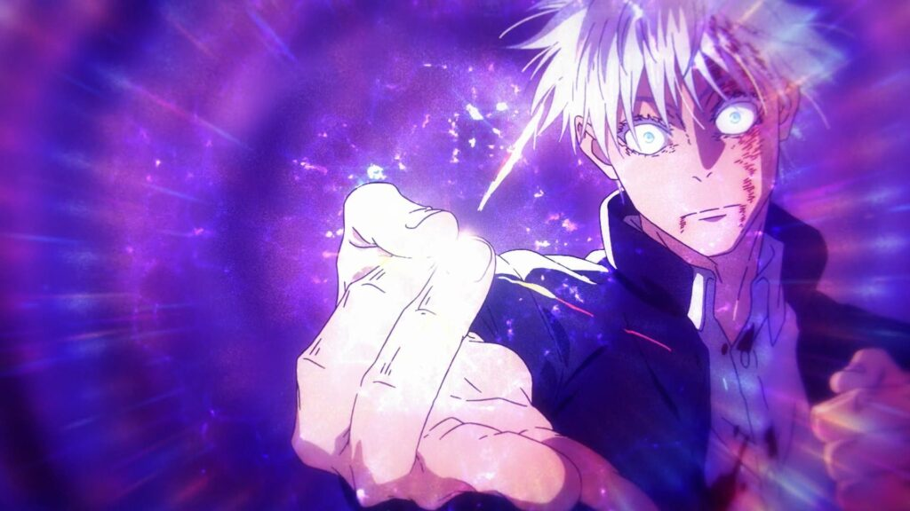
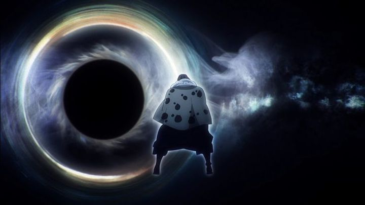
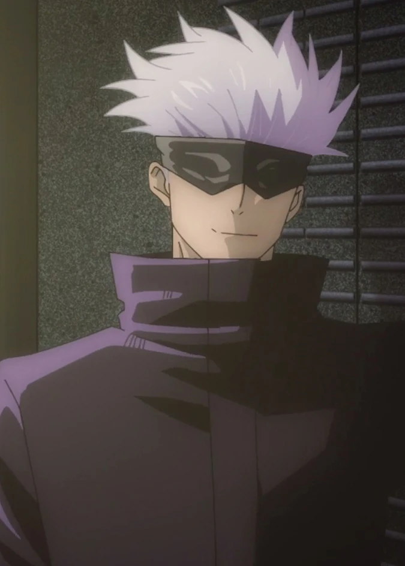
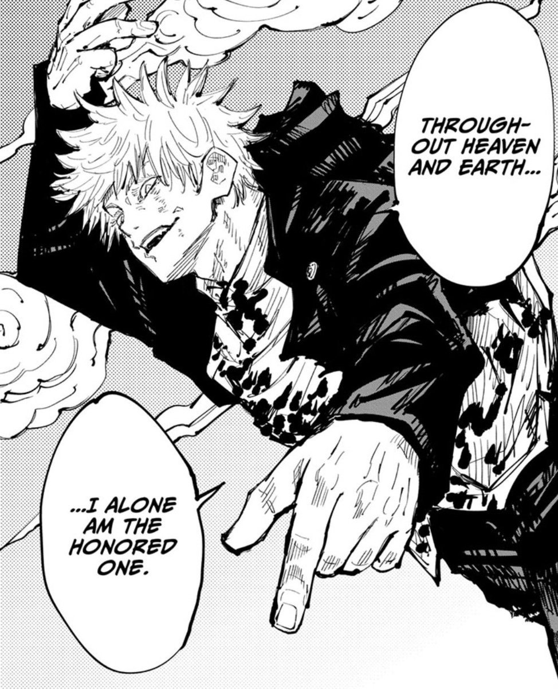
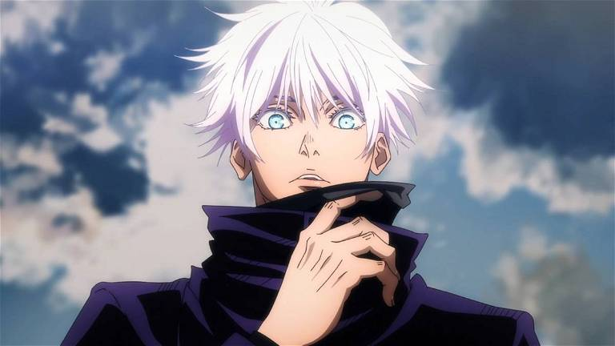

¿Quién es?
Satoru Gojo es el hechicero de grado especial más poderoso del mundo moderno. Es el primer miembro del Clan Gojo en nacer con los Seis Ojos y la Técnica del Ilimitado simultáneamente en cientos de años. Actúa como mentor de la nueva generación, buscando reformar el corrupto sistema de la hechicería a través de la educación.
Su historia es una de soledad absoluta debido a su poder incomparable. Tras ser sellado en la Prisión Confinadora durante el Incidente de Shibuya, regresó para enfrentar a Sukuna en una batalla que decidió el destino de la humanidad. Aunque cayó en combate en Shinjuku, su sacrificio y sus enseñanzas fueron la base necesaria para que sus alumnos lograran la victoria final.
Apariencia

Gojo es un hombre imponente de 190 cm de altura. Tiene el cabello blanco como la nieve y unos ojos azules cristalinos extremadamente profundos, conocidos como los Seis Ojos, que normalmente mantiene cubiertos para evitar la fatiga sensorial.
Durante su etapa como maestro, solía usar una venda negra o gafas de sol oscuras. En su juventud, utilizaba vendas blancas. En la batalla final de Shinjuku, vistió un conjunto de combate ajustado de color oscuro, similar al que usaba su antiguo amigo Toji Fushiguro, simbolizando su disposición total para el combate a muerte.
Personalidad

A simple vista, Gojo parece ser una persona alegre, despreocupada y a veces infantil, especialmente con sus colegas y alumnos. Sin embargo, esta actitud es a menudo una máscara para su inmensa confianza y su desprecio por las jerarquías tradicionales de la hechicería.
Es un hombre profundamente solitario que entiende que nadie puede alcanzar su nivel de comprensión del mundo. A pesar de su arrogancia técnica, posee un gran sentido del deber y un amor genuino por sus estudiantes, a quienes considera el futuro que él no podrá ver.
Habilidades
Los Seis Ojos
Le permiten ver la energía maldita con un detalle atómico y reducir el consumo de energía de sus técnicas a casi cero.

Técnica del Infinito
Manipula el espacio a nivel cuántico. Su aplicación pasiva, el Infinito, impide que cualquier ataque lo toque físicamente.

Brillo Azul (Cero)
Crea un vacío magnético que atrae y aplasta todo lo que se encuentra en su camino.

Resplandor Rojo
Aplicación inversa que genera una poderosa fuerza de repulsión divergente que lanza todo por los aires.

Imaginario: Púrpura
Colisión de Azul y Rojo que crea una masa imaginaria que borra instantáneamente todo lo que toca.

Vacio Infinito
Expansión de Dominio que atrapa al oponente en un flujo infinito de información, paralizando su cerebro por completo.

Imágenes de Gojo



Curiosidades
Cumpleaños
7 Dic
Altura
190 cm
Debilidad
Dulces
- ▸ Empezó a comer dulces para estimular su cerebro, pero terminó desarrollando un gusto genuino por ellos.
- ▸ Es un gran fanático de Digimon en su juventud.
- ▸ No tiene pasatiempos porque puede hacer casi cualquier cosa que se proponga de inmediato.
- ▸ Su diseño se inspiró parcialmente en un supervisor de los exámenes Chunin de Naruto llamado Tonbo Tobitake.
- ▸ Al final del manga, se confirma que su legado vive a través de la nueva estructura de la sociedad de hechicería.
Última actualización de esta página: